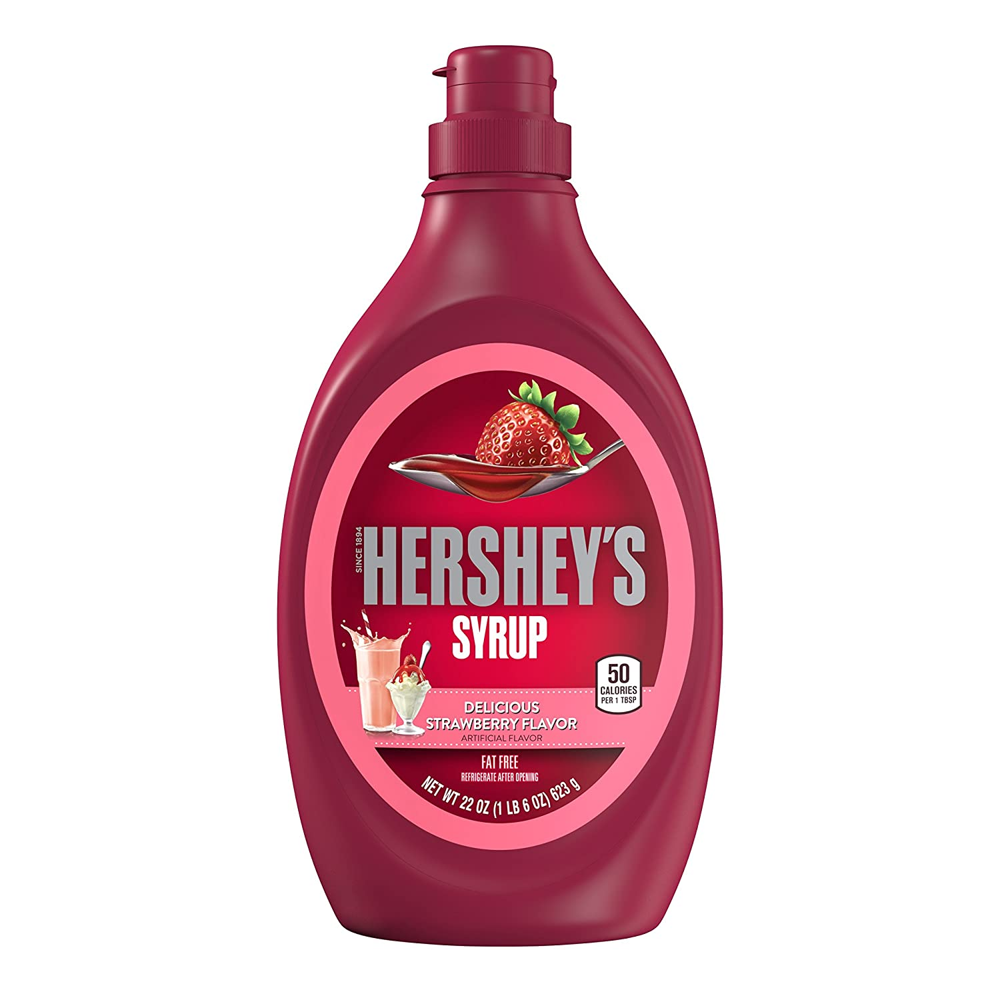

Strawberry Syrup

This simple tasty strawberry sauce
Ingredients
- 2 Quarts Strawberries
- 1/2 Cup Sugar
Steps
- Step 1:Place the strawberries in a large bowl. Sprinkle the sugar evenly over the berries, and stir to evenly coat all of the fruit. Let stand at room temperature for 10 minutes, stirring occasionally. Cover and chill until ready to serve.